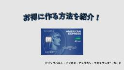
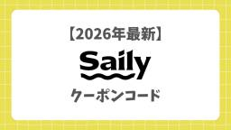
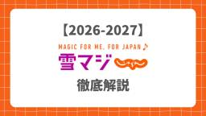
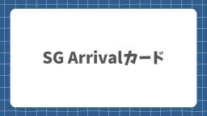
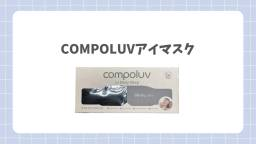
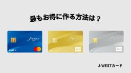
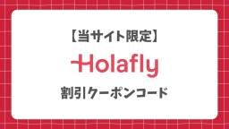
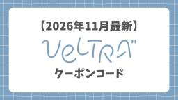
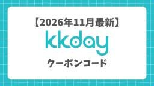
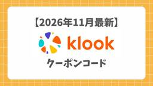

nrtlog.com
https://nrtlog.com/
nrtlog.com
フィード

セゾンコバルト・ビジネス・アメックスの入会キャンペーンやポイントサイトはある？お得に作る方法を徹底解説！
nrtlog.com
セゾンコバルト・ビジネス・アメックスの入会キャンペーンを徹底解説。公式特典はAmazonギフトカード最大8,000円分、紹介経由なら条件シンプルに8,000円分。大手ポイントサイトに案件がないことも含め、一番お得な作り方を紹介！
9時間前

【2026最新】eSIM・Saily(セイリー)のクーポンコードを紹介！安く買う方法と割引の使い方！
nrtlog.com
Saily(セイリー)のeSIM最新5ドル割引クーポンコードと安く買う使い方を徹底解説。海外旅行・出張で使えるプロモコードの入力手順や割引が使えない・適用されない時の対処法、AiraloやHolaflyとの比較まで分かりやすく紹介！
1日前
【中国・桂林】环球国际酒店(環球インターナショナルホテル)をレビュー！客室・立地・朝食を徹底解説！
nrtlog.com
环球国际酒店[環球インターナショナルホテル](桂林两江四湖象鼻山店)の宿泊記レビュー！空港、高鉄駅からすぐ、観光地へのアクセスも抜群の立地や客室の設備・清潔感、朝食ビュッフェのクオリティを徹底解説！
2日前

【26-27シーズン】雪マジを徹底解説！対象ゲレンデや登録方法、使い方、注意点！19〜22歳はリフト券が無料！
nrtlog.com
【2026-2027シーズン版】じゃらんの雪マジとは？19〜22歳は対象ゲレンデのリフト券が1施設2回まで無料、3回目以降も最大半額になるリクルートの企画を解説。対象の生年月日や登録方法、当日の使い方、全国約130の対象ゲレンデ一覧と対象日や周辺の温泉まで紹介！
2日前

【シンガポール】SG Arrival Cardの書き方・申請方法を徹底解説！実際の手順をアプリ・公式サイトごとに写真で紹介！
nrtlog.com
シンガポール入国に必要な「SG Arrival Card(SGアライバルカード)」の書き方・申請方法を徹底解説。スマホアプリ(MyICA)とWeb公式サイトの登録手順、いつから申請可能か、偽サイトの注意点まで分かりやすく紹介！
3日前
JR西日本の観光列車「はなあかり」を徹底解説！予約方法や料金、時刻表、スーペリアグリーンの車内を写真付きで紹介！
nrtlog.com
観光列車「はなあかり」。実際に乗ったスーペリアグリーンを写真付きでレビュー！予約方法や運賃・料金、運行ダイヤ(時刻表)、座席の種類を徹底解説！新山口〜岩国間の最新運行ルートや予約の必要性、お得に乗る方法も！
4日前
タイムズカーシェアの解約(退会)方法とタイミング！できない時の対処法や違約金、日割り、損しない進め方・乗り換え先を解説！
nrtlog.com
タイムズカーシェアの解約(退会)方法を解説。違約金はなく手続きはマイページで完了しますが、月額基本料金の日割りはなく退会の取り消しもできません。損しないタイミングや注意点、情報漏洩が不安な人や月会費を払いたくない人におすすめの乗り換え先も紹介！
5日前

COMPOLUV遮光安眠アイマスクをレビュー！どこで買えるかについても解説！IVEガウルも愛用！
nrtlog.com
COMPOLUV(コンポラブ)遮光安眠アイマスクを徹底レビュー！100均など低価格帯のアイマスクとの違いも解説！圧倒的な遮光性と高いフィット感で長時間フライトでも快適な睡眠をサポート！韓国OLIVE YOUNG(オリヤン)での購入方法も解説！
5日前

【2026年11月最新】J-WESTカードはどのポイントサイト経由がお得？入会キャンペーンと紹介キャンペーンを解説！
nrtlog.com
J-WESTカードを最もお得に作る方法！紹介キャンペーンと入会キャンペーンの併用が最強！WESTERポイントをザクザク稼げるクレジットカードのお得な初め方を徹底解説！
6日前

【2026年最新】Holafly(オラフライ)の5%OFF限定クーポンコード！無制限のeSIMをお得に！
nrtlog.com
【2026年最新】Holafly(オラフライ)の全商品が5%OFFになる当サイト限定割引クーポンコード(プロモコード)を公開！海外でデータ無制限で使える人気eSIMのお得な購入手順や決済画面での入力方法、エラー時の対処法まで分かりやすく解説。
6日前
【シンガポール】マリーナベイサンズの展望台の行き方・所要時間とチケット料金を解説！お得に予約する方法や学割を実体験をもとに紹介！
nrtlog.com
マリーナベイサンズの展望台(スカイパーク)の行き方・所要時間・チケット料金を実体験で解説！空港から地下鉄で約1時間、所要時間は30分〜1時間。公式より約300〜400円安いKlookでの予約方法や学生・シニア割引(優待割引)、宿泊者以外の入場も紹介！
6日前

【2026年11月最新】VELTRA(ベルトラ)のクーポンコードはある？誰でも使える割引やJCB・エポスなどクレカ優待を何度も使う筆者が解説！
nrtlog.com
【2026年11月最新】VELTRA(ベルトラ)のクーポンコード情報！初回クーポンや3,000円OFFの現状、誰でも使えるセール・キャンペーン、JCB・エポス・セゾン・イオンカードの優待割引と取得方法を、何度も使う筆者が徹底解説！
7日前

【2026年11月最新】KKday(ケーケーデイ)割引クーポンコードまとめ！毎月使う筆者がお得にチケットやツアーを買う方法を徹底解説！
nrtlog.com
KKday(ケーケーデイ)の2026年11月最新割引クーポンコード一覧まとめ。初回500円OFFや韓国・タイ等のエリア限定割引、使い方や使えない原因を愛用者が徹底解説！海外ツアーや国内チケットを最安値で予約する方法を大公開！
7日前

【2026年11月最新】Klook(クルック)割引クーポンコードまとめ！毎月使う筆者がお得にチケットやツアーを買う方法を徹底解説！
nrtlog.com
【2026年11月最新】Klook(クルック)で今すぐ使える割引クーポンコード一覧！初回500円OFFやアプリ限定5%OFFに加え、日本国内のバスや大阪周遊パスが割引に！海外ディズニー・USJ・台湾・韓国で使える最新コードを完全網羅。クーポンの使い方や期限なども解説！
7日前
【羽田T3】プライオリティパスラウンジ「SKY LOUNGE SOUTH」に潜入！食事やお酒の種類やシャワーを写真付きで正直レビュー！
nrtlog.com
羽田空港第3ターミナル(T3)の「SKY LOUNGE SOUTH」へ潜入レビュー！プライオリティパスで入れる国際線ラウンジの営業時間や行き方、ビュッフェの食事やアルコール、座席やシャワー設備まで写真付きでわかりやすく解説！
8日前

【徹底比較】Airaloとトリファ(trifa)はどっちがおすすめ？料金や対応国・サポートの違いを実際に使って筆者が解説！
nrtlog.com
海外旅行向けeSIM「Airalo」と「トリファ(trifa)」を料金・対応国・使いやすさで徹底比較！実際のデータ、筆者の利用経験をもとにAiraloがおすすめな理由を解説！当サイト限定15%OFFクーポンの使い方や設定手順まで詳しく紹介！
8日前
学生専用ライフカードの国際ブランドはどれがおすすめ？変更はできる？Visa、Mastercard、JCBを徹底比較！
nrtlog.com
この記事にはプロモーションが含まれています ライフカードが提供する学生専用のクレジットカードとして人気な学生専用ライフカード。 そんな学生専用ライフカード、申し込み時に「Visa・Mastercard・JCBのどれを選べばいいの？」と迷う方も多いと思います。 基本的なカード性能はどのブランドでも同じですがそれぞれに細かい違いがあります。 この記事では、学生専用ライフカードの基本性能から3つの国際ブランドごとの入会特典や審査難易度、限度額、利便性といった点をもとに、どのブランドを選ぶべきか、徹底比較していきます！ この記事でわかること この記事でわかること 学生専用ライフカードとは？ 主なメリッ…
10日前
北陸新幹線「グランクラス」を徹底解説！実際に乗って料金や食事・座り心地を正直レビュー！かがやき・はくたか・つるぎ・あさまの違いも紹介！
nrtlog.com
北陸新幹線の最上級シート「グランクラス」を徹底解説！座席の座り心地や車内設備、食事やドリンクを写真付きで紹介！かがやき・はくたか・つるぎ・あさまによるサービスの違いや料金、e5489や株主優待を活用したお得な買い方も！
10日前
学生専用ライフカードのメリット・デメリットを愛用の大学生が解説！実際に海外旅行や留学で使ってみた！
nrtlog.com
学生専用ライフカードのメリット・デメリットを愛用者が正直レビュー！海外で4%キャッシュバックの最強カード！大学生・大学院生や専門学生、高校生の審査基準、スマホ決済の意外なデメリット、最大15,000円還元のお得な申し込み方法まで徹底解説！
12日前
北陸新幹線のグリーン車を徹底解説！メリットやおすすめの座席、普通車との違い、料金、車内の設備を写真付きで紹介！
nrtlog.com
北陸新幹線のグリーン車(E7系・W7系)の座席設備や普通車との違い、主要区間の料金比較、おすすめの座席位置まで徹底解説！電動リクライニングやコンセント、Wi-Fi、荷物スペースなどの車内設備を写真付きで紹介！e5489でお得に予約する方法も！
12日前
【2026年最新】オリーブヤングは日本にある？ルクア大阪・新宿の店舗や日本で買う方法、グローバル通販を愛用者が徹底解説！
nrtlog.com
オリーブヤングの日本の店舗はどこ？大阪(ルクア)・新宿の店舗はすでに閉店。2026年最新の状況と日本で買う方法を愛用者が徹底解説！公式通販オリーブヤンググローバルの送料・関税・届く日数、楽天・Qoo10との違いも紹介。
13日前
【中国・福州】福州を乗り継ぎ時間で観光！トランジットでのおすすめモデルコースを紹介！
nrtlog.com
中国は福州のトランジット時間で楽しめる観光モデルコースを徹底解説！福州長楽国際空港からのアクセスや市内のおすすめ観光スポット、乗り継ぎ時間の過ごし方や注意点までを紹介！短時間のトランジットを効率よく満喫するための必須情報も！
14日前
【香港航空】座席指定やオンラインチェックインのやり方を徹底解説！無料・有料のパターンや条件、できない時の対処法と手順を写真付きで紹介！子連れはどうなる？
nrtlog.com
香港航空の座席指定やオンラインチェックインのやり方を写真付きで解説！無料・有料のパターンや料金、48時間前から無料で座席を確保できる方法、子連れの場合、できない時の対処法や注意点も紹介！
15日前
北九州空港の「ラウンジひまわり」へ潜入！入り方や飲食物・料金やクレカについて画像付きで徹底解説！
nrtlog.com
北九州空港のカードラウンジ「ラウンジひまわり」を実際に利用してレビュー！営業時間や場所、料金、無料で入れる対象クレジットカードのほか、無料のお菓子やドリンクの内容も写真付きで解説します！
16日前
【2026最新】トリファの最大15%OFFクーポンコードやキャンペーンを紹介！もっとお得なeSIMのクーポンも！
nrtlog.com
トリファ(trifa)のクーポンは5%OFFだけ？2026年最新のクーポンコード「TRIFAOF」と初回最大15%OFFになるリンク経由インストールの方法、併用可否を解説！トリファより安いAiralo等のeSIMクーポンも紹介！
18日前
トリバゴ(trivago)の評判は悪い？トラブルの原因やなぜ安いのか、仕組みと安全な予約方法を実際に使った筆者が解説！
nrtlog.com
トリバゴ(trivago)の評判が悪いと言われる理由を実際に使った筆者が解説！なぜ安いのか仕組みや口コミ、表示価格の違い・キャンセルなどよくあるトラブルの原因、知らない予約サイトを避けて安全に予約するコツも紹介！
18日前
【中国・深圳】自動運転タクシー「Pony.ai」に乗ってみた！乗り方や予約方法を写真付きで徹底解説！乗り心地を正直レビュー！| 小马智行
nrtlog.com
中国・深圳の自動運転タクシー「Pony.ai(小马智行)」に実際に乗った筆者が、WeChatミニプログラムでの予約方法や乗り方、日本の電話番号・WeChat Payでの利用、料金や運行エリアを写真付きで解説！そして乗り心地を正直レビュー！
19日前
【中国旅行】美团外卖(Meituan)は日本の電話番号で使える？登録・注文方法やおすすめデリバリー方法を徹底解説！
nrtlog.com
中国旅行で人気の美団外卖(Meituan)でのデリバリーの注文方法を徹底解説！現地電話番号なしで日本の電話番号やWeChatミニプログラムを使い登録・注文する裏ワザ、ホテルでの受取方法まで紹介！
20日前
【関空】国際線カードラウンジ「NORTH LOUNGE」へ潜入！入れるゴールドカードや飲食物・料金を画像付きで徹底解説！プライオリティパスは？
nrtlog.com
関西国際空港(関空)の第1ターミナル国際線フロアにあるカードラウンジ「NORTH LOUNGE」へ潜入レビュー！無料で入れる対象ゴールドカードやプライオリティパスの利用可否、サービス内容や料金、ドリンク・軽食、座席の様子まで画像付きでわかりやすく解説！
21日前
ホテルのサブスクで安いのはどれ？ツギツギ・HafHなど主要サービスを比較！自腹で加入した筆者が向いている人を解説！
nrtlog.com
ホテルのサブスクで安いのはどれ？HafH・ツギツギ・ADDressの特徴や料金、契約期間の縛り、1泊あたりの目安を徹底比較！自腹で加入して元が取れるか検証！迷ったら縛りなしで月3,400円から試せるHafHがおすすめ！
22日前